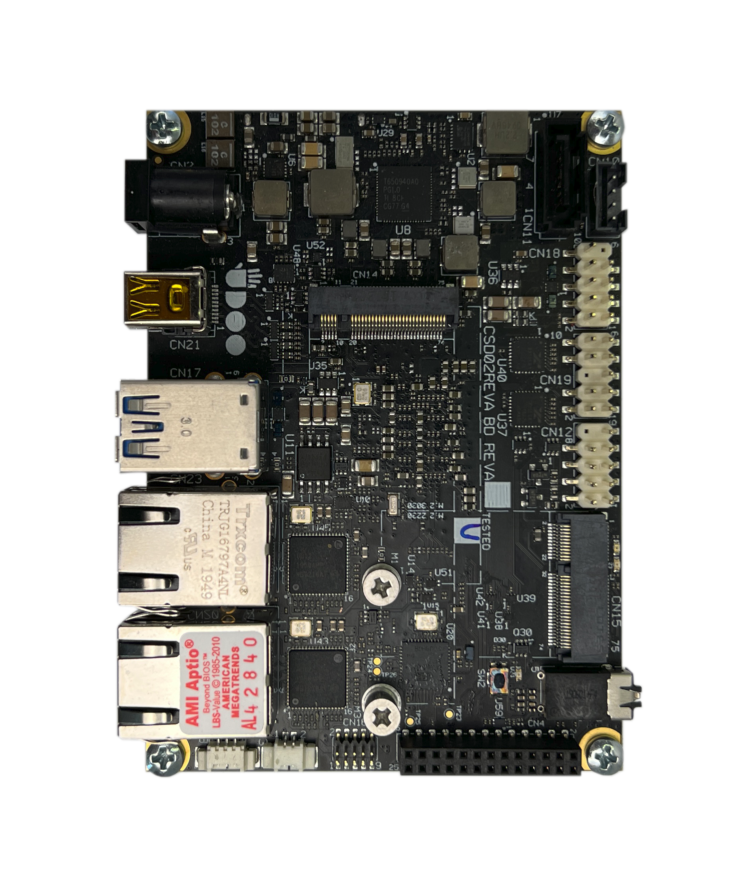

Introduction
UDOO VISION
UDOO VISION is the new PC created to run AI applications!
On UDOO VISION you can run all the software available for the PC world, from gaming to video streaming, from graphical editors to professional development platforms, plus all the software for the Arduino™ Leonardo world, including all the sketches, libraries and the official Arduino™ Leonardo IDE.
Thanks to the embedded Intel® HD Graphics 500 GPU, you can use all the OpenVINO™ toolkit to build projects which leverage the power of AI.
UDOO VISION embeds two processors:
- a Quad Core 64-bit Apollo Lake family 14nm processor, designed for the PC domain (The Intel® Atom™ E39XX System-on-Chips (SoCs) comes with 1.6 GHz base frequency and with 64-bit instruction set and very low TDP. This single chip solution includes the memory controller, which gives support for up 32-bit Quad-Channel LPDDR4 2400 MT/s Memory.)
- the Microchip ATmega32U4 8-bit AVR microcontroller, the same of Arduino® Leonardo.
While the Apollo Lake processor can run all the Windows and Linux 64bit distros you want to use as desktop PC, the ATmega32U4 allows easy access to an Arduino™ Leonardo environment.
Download the User Manual to have a more complete explanation of the UDOO VISION hardware.
Soon will be published video tutorials on the UDOO website, to start using your new UDOO VISION board.
If you have any trouble uploading the Arduino sketch running Linux, check the Linux Known issue - Sketch upload section in the Getting Started with Arduino Leonardo page.
Heads up! In order to prevent damages to your board, remember to:
- Never provide more than 5V in input to the GPIOs of the Arduino Leonardo-compatible(Atmel® ATmega32U4).
- Never keep the board in touch with metal objects or surfaces while it is powered up.
- Power the board with a stabilized power supply (DC-jack with a standard 5.5mm/2.1mm barrel jack, internal positive, Voltage 12V ± 5%, at least 3A).
- Do not use a NON-standard USB 3.0 peripheral. If you use a non-standard USB 3.0 peripheral with an external power plug, this could send current back to the UDOO VISION board with the risk of damage.
Lineup
UDOO VISION retail line up consists of two models, UDOO VISION X5 and UDOO VISION X7.
Check the Board Versions section to see the differences between the two UDOO VISIONs.
Technical specifications
-
Processor:
- CPU Intel® Atom™ X7-E3950 up to 2.0 Ghz (X7 version)
- CPU Intel® Atom™ X5-E3940 up to 1.8 Ghz (X5 version)
- GPU:
- Intel® HD Graphics 500 series controller up to 700 MHz 18 Execution Units
- RAM:
- 8 GB LPDDR4 Quad-Channel (X7 version)
- 4 GB LPDDR4 Quad-Channel (X5 version)
- Microchip ATmega32U4 8-bit AVR RISC-based microcontroller.
- Video interfaces:
- 1x embedded DisplayPort
- 1x Mini DisplayPort++ (with CEC line using HDMI adapters)
- Storage:
- 64GB eMMC soldered on-board (X7 version)
- 32GB eMMC soldered on-board (X5 version)
- 1x M.2 Key B 2242/3042/2280 slot for SSD modules
- 1x SATA III 6Gb/s connector
- 1x MicroSD slot
- Networking:
- 2x Gigabit Ethernet LAN interface
- 1x M.2 Key E slot for optional Wireless(WiFi+BT) Module
- 1x M.2 Key B WWAN Slot (Type 2260/3042 modules accepted)
- Audio interfaces:
- HD Audio Codec Cirrus Logic CS4207
- Microphone + Headphone Combo Connector (TRRS)
- 2x USB 3.0 Type-A sockets
- 1x miniSIM Card Slot**
- 12V (± 5%) DC Power Jack (standard 5.5mm/2.1mm barrel jack: internal positive), at least 3A.
- RTC Battery Connector + RTC Coin Battery
- Bi-color Power Status LED
- Arduino™ Leonardo-Compatible through the standard Arduino™ Pins layout and compatible with Arduino™ shields.
*Available on Pin Header
**Same slot of MicroSD
Visit the official accessories sections.
Community
- Official web site www.udoo.org
- Official forum www.udoo.org/forum
Forums
The official UDOO forums can be found at www.udoo.org/forum
The forum search facility has been tweaked to allow more general searching. Please do a search before making a post as the issue may already have been raised and answered.
IRC channel
There is an (unofficial) UDOO discussion channel on IRC. Using the IRC client of your choice,
use server information: irc.freenode.net. Room name is #udoo.